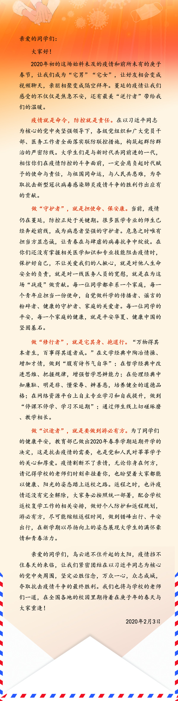

对于新冠肺炎疫情的感想
2020-03-31我们相信天空蔚蓝，我们相信人间大爱温暖。我们相信铿锵的誓言，我们相信生命的平安。
——题记
2020农历新年前夕，一波突如其来的新型冠状病毒爆发，使这个春节变得特殊起来。每天一睁眼就看着全国确诊病例的增加，每天都能收到当地疫情防控指挥部发来的短信，新型冠装病毒感染的肺炎疫情逐渐成为人们讨论的话题。看着人流稀疏的街道，我才发现原来国泰民安就是，车水马龙，人声鼎沸。对于这次疫情，我的感受颇深。
疫情使今年的寒假生活变得不一样。我看到了不一样的春节联欢晚会，看到了元宵特别节目；我可以在老家呆久一点，吃奶奶、外婆自己种的菜，自己做的农家饭；我可以线上学习，换一种方式学习，使获取知识变得更加有趣。
一方有难，八方支援，疫中有情，人间有爱。84岁高龄的中国工程院院士钟南山没有享受退休生活，在深圳抢救完相关病例后连夜赶去武汉。他让我们“不要去武汉”，而自己却英勇逆行。还有73岁的中国工程院院士李兰娟“我自己希望去金银潭医院，就是危重症病人最集中的医院。”武汉金银滩医院院长张定宇，身患渐冻症却还坚持奔走在一线，连续奋战40天，一天只能睡三个小时。上海医疗救治专家组组长张文宏要把所有岗位的医生全部换下来，带领共产党员冲锋陷阵。各地医生、护士主动请战，写下一封封请战书。武汉大学人民医院的一名女医生留下来《与夫书》“此事我没有告知明昌。个人觉得不需要告诉，本来处处都是战场！”山东日照东港区的一名68岁的环卫工人到派出所放下了一万块钱，仅花了17秒就匆匆离去。和钱放在一起的还有一封信写着“急转武汉防控中心，给白衣天使加一点油，我的一点心意”。而这位大爷每个月的收入只有600多块钱。山东寿光、四川汶川、广西桂林等各地村民纷纷向湖北武汉捐赠蔬菜，多达数百吨。世界上最贫困的国家之一的巴基斯坦以举国之力，倾尽所有向我们捐赠物资，其实他们自己都不够用。蒙古国总统亲自到北京访问，捐献了三万头羊。隔离病毒不隔离爱，这些事迹实在是太多太多了。患难见真情，你们的样子，我们定将铭记在心。
基辛格说过“中国人，总是被他们之中最勇敢的人保护得很好。”“哪有什么白衣天使，不过是一群孩子换了一身衣服，学着前辈的样子，治病救人、和死神抢人罢”。这个世界上从来也没有什么天生的盖世英雄，是责任、担当让他们破茧成蝶、淬炼成钢。哪有什么岁月静好，不过是有人替你负重前行。
习近平总书记在致全国青联和学联的贺信中指出“‘士不可以不弘毅，任重而道远。’国家的前途，民族的命运，人民的幸福，是当代中国青年必须和必将承担的重任。”看不见的病毒告诉我们一个深刻的道理：灾难面前，没有谁能置身事外。我看了《教育部致全国大学生的一封信》，作为当代青年，作为一名普通的大学生，我们应该做“守护者”、“修行者”、“识途者”。我们现在还没有掌握相关医学知识和专业技能，学会保护好自己，就是对奋战在一线医务人员的宽慰，自觉宅在家，外出戴口罩，自觉做到不造谣、不信谣、不传谣，不去人流密集场所就是为“战疫”做贡献。这是个“互联网+”的时代，学校为我们“停课不停学”也提供了很多方便，我们不能荒废这段漫长的时光，要认真完成老师布置的各项学习任务，交流学习，做到“腹有诗书气自华”。我们也不能忘了党和国家以及在战疫一线的人们对我们的关心和厚爱，在我们完成学业之时就应为国家、为党作出贡献。
习近平总书记说过“我相信只要我们坚定信心、同舟共济、科学防治、精准施策，我们一定会战胜这一次疫情。”新冠病毒是人类共同的敌人，这是一场疫情防控的人民战争，这场战斗是人类共同的战役，全世界各国联合起来，众志成城，团结奋战，一定能赢得战“疫”的最终胜利，美好的春天一定会到来。“武汉本来就是一座很英雄的城市，中国本来就是一个很英雄的国家”。武汉加油！让患者早日康复，也让逆行者早些回家。天耀中华！愿你平安昌盛生生不息。
